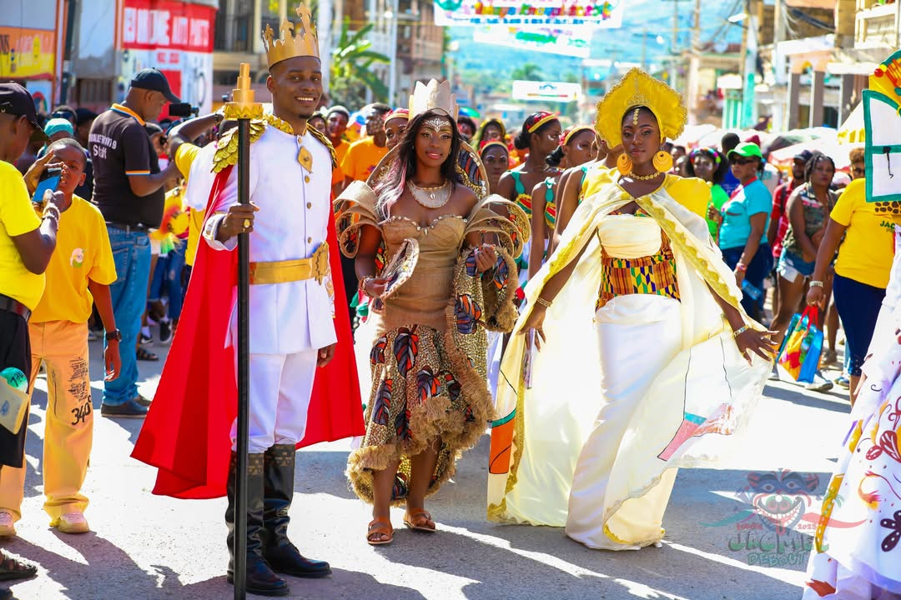
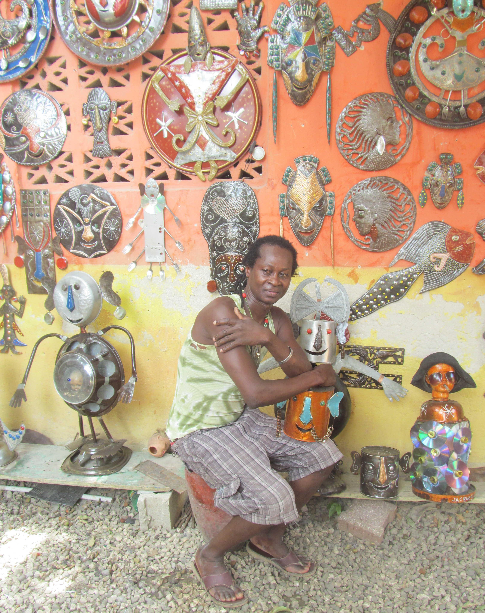
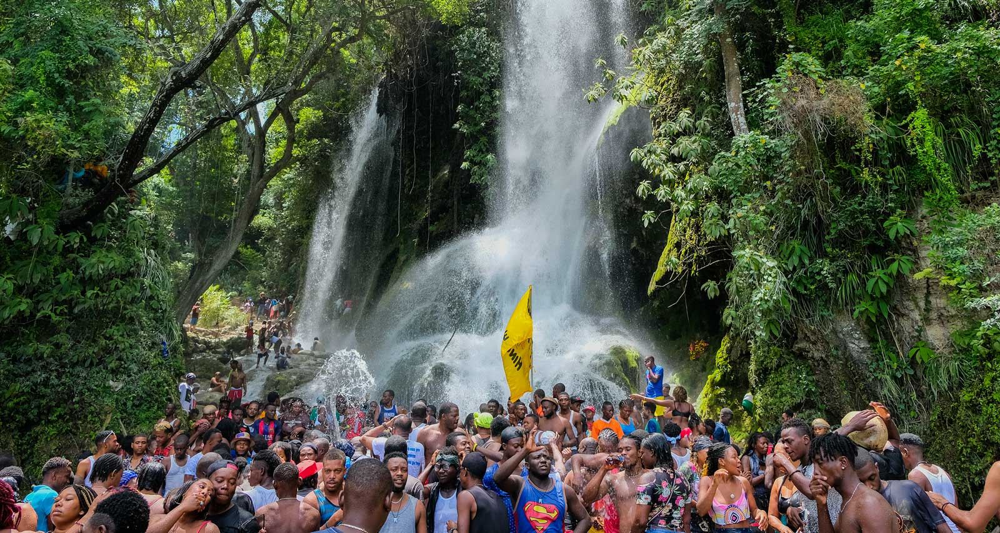
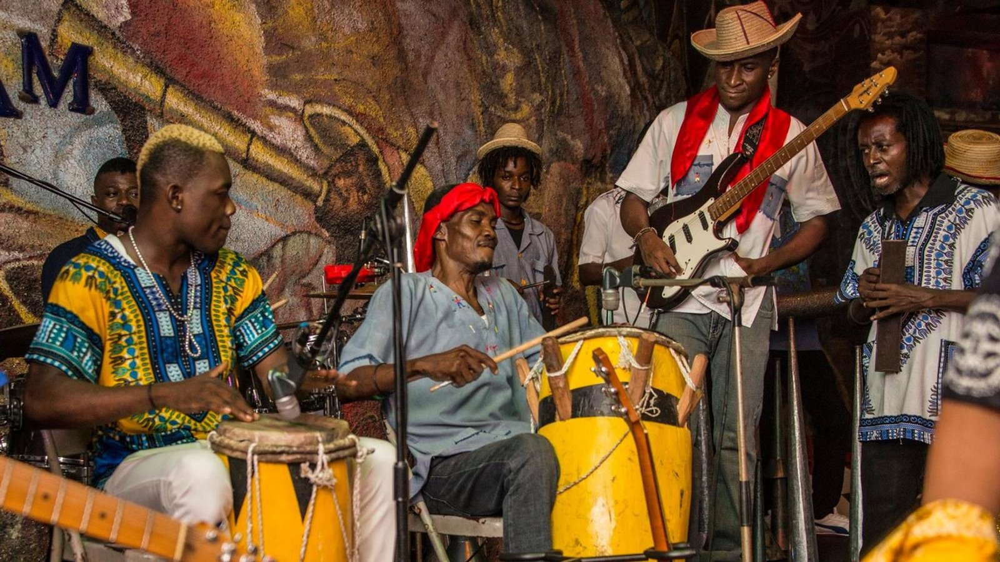

Histoire et culture vivante
Comprendre le patrimoine haïtien suppose de connaître les grandes étapes qui l'ont façonné, mais aussi les traditions qui continuent aujourd'hui de le faire vivre.
Repères historiques
-
Avant 1492
Le territoire, appelé Ayiti, est habité par les populations taïnos, dont la présence précède l'arrivée européenne.
-
1492–1804
Colonisation espagnole puis française. La colonie de Saint-Domingue devient, au XVIIIe siècle, l'une des plus riches de l'empire colonial français, fondée sur l'économie de plantation et l'esclavage.
-
1791
Début de la révolution haïtienne, marquée par un soulèvement d'ampleur des populations réduites en esclavage dans le Nord de la colonie.
-
18 novembre 1803
Bataille de Vertières, victoire décisive des forces de Jean-Jacques Dessalines face à l'armée française.
-
1er janvier 1804
Proclamation de l'indépendance d'Haïti, qui devient la première république indépendante dirigée par d'anciens esclaves.
-
1805–1820
Construction de la Citadelle Laferrière et du palais Sans-Souci sous le règne d'Henri Christophe, dans le royaume du Nord.
-
XIXe siècle
Essor du commerce du café, notamment autour de Jacmel, qui façonne une partie du patrimoine architectural urbain encore visible aujourd'hui.
-
XXe – XXIe siècle
Évolutions politiques, sociales et culturelles majeures, dont certaines restent à documenter au cas par cas selon le niveau de détail souhaité pour ce projet.
Cette frise présente des repères majeurs largement documentés ; certaines dates ou durées mentionnées ailleurs sur le site sont signalées comme à vérifier lorsque les sources consultées divergent.
Traditions vivantes
Le patrimoine immatériel haïtien se transmet autant par les objets que par les gestes, les récits et les célébrations.

Le carnaval de Jacmel
Réputé pour ses masques et costumes en papier mâché confectionnés par des artisans locaux tout au long de l'année.
En savoir plus →
L'artisanat du fer découpé
Un savoir-faire régional transmis d'atelier en atelier, transformant des tôles métalliques en œuvres ajourées.
En savoir plus →
Les récits liés à l'eau
Certains sites naturels, comme Bassin Bleu, restent associés à des croyances locales transmises oralement de génération en génération.
En savoir plus →
Musique et rythmes
Les traditions musicales locales accompagnent les célébrations religieuses, populaires et festives à travers le pays.
En savoir plus →